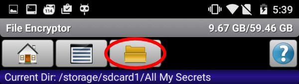
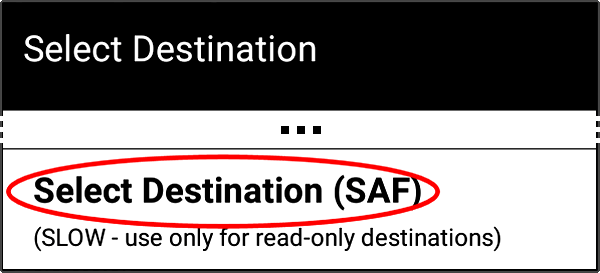

SAF Mode
This directory is read-only in direct access mode. To gain full access to this folder, try using SAF mode.
Where?

Or, it can be used for output operations only (if custom destination folders are activated in the application settings - Settings: File Encryptor → Encrypted/Decrypted Files Destination).
If you set the destination(s) to "Ask", the following dialog will be displayed for all encryption/decryption tasks:
Or, after pressing the "Encrypt / Decrypt" button, use the following option:

Notes & Limitations
- In general, external SD cards are usually much less reliable (especially some combinations of devices/SD cards) than an internal memory.
- SAF API provides much lower performance than the standard direct file access mode (especially with dirs that contain a lot of files/subdirs).
- Home/Custom directories cannot be set in SAF; however, the last-picked SAF URI is automatically saved: Home Button → Go to Last Picked SAF Dir.
- The wipe feature does not work. If option “Wipe after Encryption” is checked in the app settings, file(s) will be deleted only.